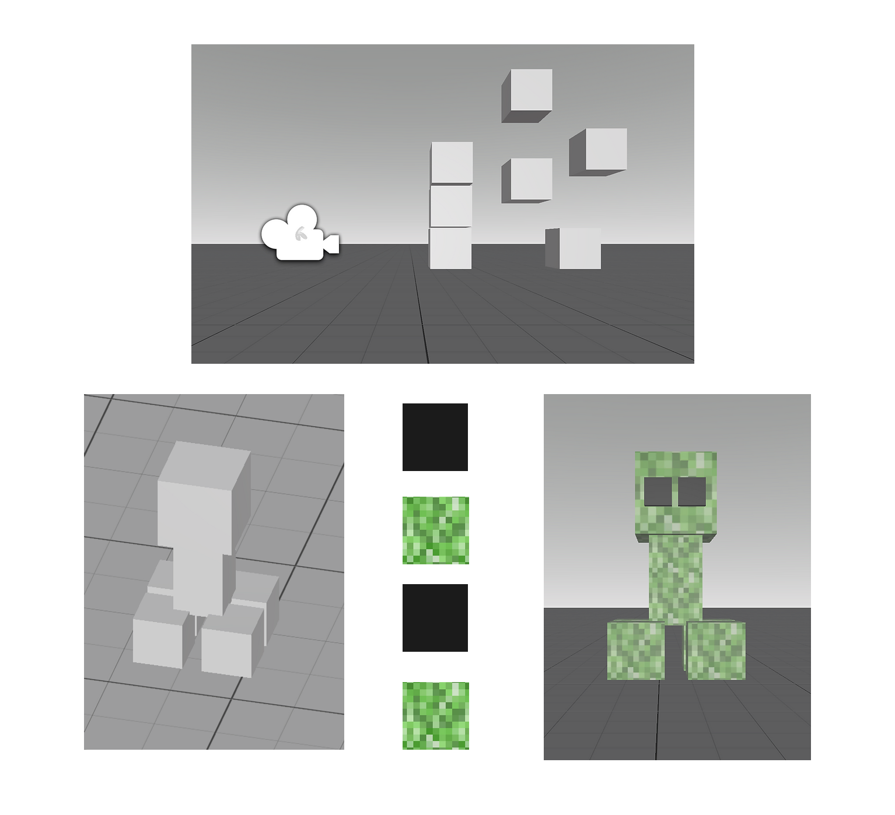

The goal of this project was to create a basic VR application in Unity for the VR Oculus Quest 2 headset. I started by downloading Oculus Developer Hub and accessing it in Unity. Following Johab’s YouTube video, I correctly set up the VR template and created the left and right controllers. I then focused on designing and creating the actual shapes, choosing to create a Minecraft creeper as my first VR program. Since it involved working with simple shapes like cubes, I found it enjoyable to learn how to make each cube hold a color/print and resize them to look good on the application.
